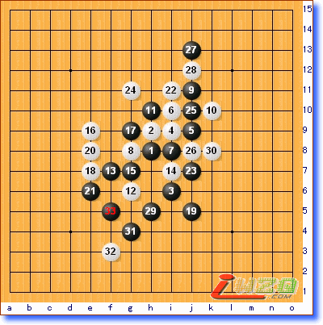

原文由 AUTHOR 发表于 2007-8-10 22:19:19 :
某些LS每次一写棋评就献丑，也挺不容易的

原文地址:http://www.shwzq.com/Article/ShowArticle.asp?ArticleID=1562
（俄罗斯消息 通讯员：连珠）8月9日，第十届世界连珠个人锦标赛A组第2轮结束。日本前名人山口釉水珠王针对俄罗斯美女尤丽娅七段喜欢稳收反击的特点，精心准备了一个陷阱，果然，尤丽娅不疑有乍，继续按照既定策略行棋，结果被山口27分钟迅速妙杀成功。中国选手吴镝五段同爱沙尼亚少年Purk六段的对战中，杀的一时性起，白24手作了一套长达9步的VCF，黑棋如果单纯防御无论如何都是输，就在吴镝自以为胜利在握之际，Purk不慌不忙，连续冲了2个四，干净利落地解V成功，然后轻巧地在右下方活三，吴镝草草防御几手后投子认负。日本同城棋手冈部宽七段和饭尾义弘七段的对局中，新生代战胜了中生代。俄罗斯的同城棋手对局中，青年棋手索斯科夫八段战胜了参加过第一届世界杯锦标赛A组的老棋手Kozhin。爱沙尼亚少年欧夫六段则败给瑞典老将卡尔松八段。最富戏剧性的要数俄罗斯Chingin七段和前世锦赛A组冠军、爱沙尼亚少年特耐特的对局，可能是计算时间过长，也可能是还没有走出第一轮失败的阴影，Chingin在趋向和棋的局面下一步随手，结果落败。

吴镝VSPurk
谢谢楼上指出。不过很多东西大家都不在现场，所以当时的选手心态也只能用揣摩而已。
另，联合国世界卫生组织提出新的年龄分段： 44岁以下为青年人。所以称索斯科夫为青年棋手无可厚非。
同时也期待您的精彩点评。大家一起为世锦赛做点工作。
引用：这不是揣摩棋手心态的问题，而是看不看得懂棋的问题。写棋评的人根本就没看懂大鱼败在哪手。那盘棋的关键是大鱼下22前，漏算了对手的23。23下出来以后，高水平的棋手都能看出白不行了。大鱼那样的棋力不可能看不出来，要不24也不用长考了近2小时。24明明是很无奈的选择，哪里是什么自以为胜利在握了。另，按你对青年的定义，那世界青年锦标赛（YWC）是不是老戈也可以参加了啊？真滑稽。
原文由 行云流水 发表于 2007-8-10 12:02:43 :谢谢楼上指出。不过很多东西大家都不在现场，所以当时的选手心态也只能用揣摩而已。
另，联合国世界卫生组织提出新的年龄分段： 44岁以下为青年人。所以称索斯科夫为青年棋手无可厚非。
同时也期待您的精彩点评。大家一起为世锦赛做点工作。
引用：3楼你不一样不在现场,那么你也只是揣摩揣摩而已吧.那么评论之前后是不是加上猜测个人看法等字眼,不了解情况对别人枉加评论.
原文由 行云流水 发表于 2007-8-10 12:02:43 :谢谢楼上指出。不过很多东西大家都不在现场，所以当时的选手心态也只能用揣摩而已。
另，联合国世界卫生组织提出新的年龄分段： 44岁以下为青年人。所以称索斯科夫为青年棋手无可厚非。
同时也期待您的精彩点评。大家一起为世锦赛做点工作。
引用：
原文由 上海PL囡囡 发表于 2007-8-10 19:52:04 :3楼你不一样不在现场,那么你也只是揣摩揣摩而已吧.那么评论之前后是不是加上猜测个人看法等字眼,不了解情况对别人枉加评论.
春秋笔法，自古有之，无须大惊小怪。
写棋评的人根本就没看懂大鱼败在哪手.
实在抱歉。对于那局的报道根本就不是棋评。而只是为了抢时间的一个报道而已。仅仅是对着棋盘瞄了一眼，匆匆写下的。至于棋评，倒是等待一些拆棋拆的烂熟的高手们评论了。对于你的批评和指正，今后如对该局写评论一定纳入。
至于年龄界限的定义，我只是采用国际通用定义，不是按照世青赛对选手的年龄定义来定义。
引用：恩，是我的疏忽已经增加。
原文由 松痕 发表于 2008-5-22 19:09:06 :
酷妞的威望是０，有志要加下威望．
引用：
原文由 AUTHOR 发表于 2007-8-10 22:19:19 :
某些LS每次一写棋评就献丑，也挺不容易的
 风云皇朝的吧，现在仍然在浙江棋社吗？
风云皇朝的吧，现在仍然在浙江棋社吗？